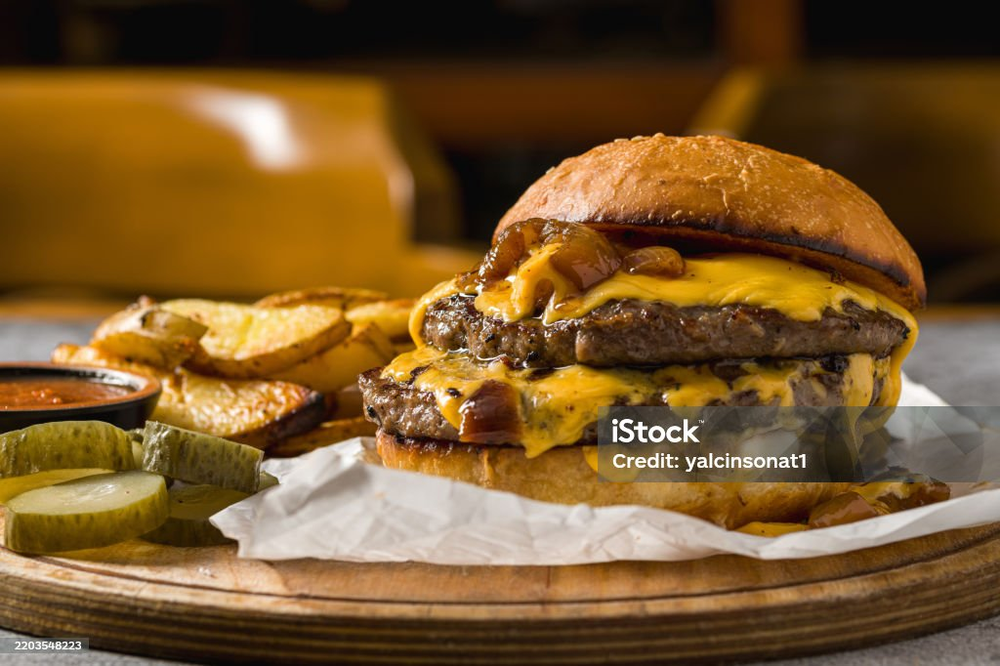

Smash Burger

Description
A traditional Smash Burger is designed and crafted to resemble
the old school style of American Fast Food Burgers.
This recipe will go over the simple steps to make the perfect
Smash Burger.
Ingredients
- 12 Ounces of 75/25 Ground Beef
- Bacon Greese or Avacado Oil
- Salt and Pepper
- 2 Burger Buns
- 2 Slices of American Cheese
Steps
- Weigh and roll Ground Beef into four 3 ounce balls
- Heat flat top until smoking
- Cover surface with Bacon Greese or Avacado Oil
- Place ground beef ball on hot surface and press down hard until a thin patty is formed
- Lightly Salt and Pepper the patty as it cooks
- After 30-60 Seconds flip the Patty and add the Cheese
- After another 30 seconds remove patty and place it on a bun
- Burgers should be stacked 2 patties high
Enjoy!
Home